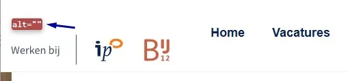

#1 - Zichtbare tekst logo komt niet voor in toegankelijke naam
Bovenaan de pagina staat het logo met de zichtbare tekst "Werken bij IPO Bij12". De toegankelijke naam van deze link is "Homepagina". Dit verschil kan spraakbesturing belemmeren: spraakopdrachten gebruiken de zichtbare tekst van een element. Als de toegankelijke naam daarvan afwijkt, activeren spraakopdrachten de link niet.
User story
Ik bedien de website met spraakbesturing. Als ik de zichtbare tekst van het logo uitspreek om de link te activeren, dan gebeurt er niets. Ik verwacht elke link te kunnen activeren door de tekst uit te spreken die ik zie.
Hoe te testen
Vergelijk voor elk element met een zichtbaar tekstlabel de zichtbare tekst met de toegankelijke naam (via het accessibility-paneel in DevTools of met een schermlezer). De zichtbare tekst moet vooraan in de toegankelijke naam staan. Test met spraakbesturing ("Klik Werken bij IPO Bij12") of de link daadwerkelijk wordt geactiveerd.
Oplossing
Zorg ervoor dat de toegankelijke naam van de logolink de zichtbare tekst bevat, bij voorkeur aan het begin. Ideaal is dat de toegankelijke naam identiek is aan de zichtbare tekst.
#2 - Logo heeft geen tekstalternatief

Het logo bovenaan de website heeft geen tekstalternatief. Het alt-attribuut is leeg. Logo's zijn informatieve afbeeldingen en hebben een tekstalternatief nodig (de alt-tekst). De alt-tekst moet de volledige tekst bevatten die in het logo wordt weergegeven. Zo begrijpen ook bezoekers die de afbeelding niet kunnen zien de inhoud.
Hetzelfde probleem komt voor bij de logo's in de footer onder de kop "Onderdeel van de Vereniging IPO". Ook deze logo's hebben een leeg alt-attribuut.
User story
Ik lees de website met een schermlezer. Als ik de pagina open, dan kan ik niet horen welke website ik bezoek omdat het logo geen tekstalternatief heeft. Ik verwacht dat het logo een tekstalternatief heeft met de naam van de organisatie.
Hoe te testen
Inspecteer elk logo en controleer of het tekstalternatief alle betekenisvolle zichtbare tekst uit het logo bevat. Als het logo een link is, controleer dan ook of de toegankelijke naam de zichtbare logotekst bevat.
Oplossing
Voeg een tekstalternatief toe aan de afbeelding waarin de volledige zichtbare tekst van het logo is opgenomen.
#3 - Logolink heeft geen duidelijk doel
De logo's in de footer onder de kop "Onderdeel van de Vereniging IPO" zijn links, maar hebben geen beschrijvende tekst voor hun bestemming. Hierdoor is het voor bezoekers die hulpsoftware zoals een schermlezer gebruiken lastig te begrijpen waar de links naartoe gaan.
User story
Ik lees de website met een schermlezer. Als ik op een klikbaar logo kom, dan hoor ik alleen 'link' zonder informatie over de bestemming, of de hele URL wordt voorgelezen. Ik verwacht dat de schermlezer duidelijk aankondigt waar de link naartoe gaat, bijvoorbeeld "IPO Interprovinciaal Overleg, van, voor en door provincies, ga naar de homepage".
Hoe te testen
Navigeer met een schermlezer naar de logolinks en controleer of elke link met een betekenisvolle toegankelijke naam wordt aangekondigd die de zichtbare logotekst bevat. Bevestig dat geen van de logolinks zonder label wordt aangeboden.
Oplossing
Geef elk logo een betekenisvol tekstalternatief. De alt-tekst moet de volledige zichtbare tekst van het logo bevatten, zodat schermlezergebruikers dezelfde informatie krijgen als ziende gebruikers. Als het logo in een link is geplaatst, neemt de link automatisch dezelfde toegankelijke naam over van de afbeelding.